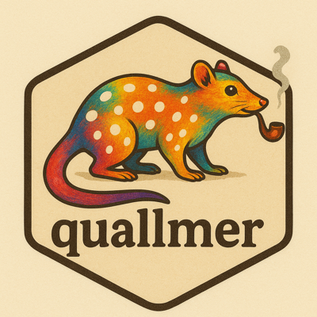

Replicate a coding task
qlm_replicate.RdRe-executes a coding task from a qlm_coded object, optionally with
modified settings. If no overrides are provided, uses identical settings
to the original coding.
Usage
qlm_replicate(
x,
...,
codebook = NULL,
model = NULL,
batch = NULL,
name = NULL,
notes = NULL
)Arguments
- x
A
qlm_codedobject.- ...
Optional overrides passed to
qlm_code(), such astemperatureormax_tokens.- codebook
Optional replacement codebook. If
NULL(default), uses the codebook fromx.- model
Optional replacement model (e.g.,
"openai/gpt-4o"). IfNULL(default), uses the model fromx.- batch
Optional logical to override batch processing setting. If
NULL(default), uses the batch setting fromx. Set toTRUEto use batch processing orFALSEto use parallel processing, regardless of the original setting.- name
Optional name for this run. If
NULL, defaults to the model name (if changed) or"replication_N"where N is the replication count.- notes
Optional character string with descriptive notes about this replication. Useful for documenting why this replication was run or what differs from the original. Default is
NULL.
See also
qlm_code() for initial coding, qlm_compare() for comparing
replicated results.
Examples
# \donttest{
# First create a coded object
texts <- c("I love this!", "Terrible.", "It's okay.")
coded <- qlm_code(texts, data_codebook_sentiment, model = "openai/gpt-4o-mini", name = "run1")
#> Error in openai_key(): Can't find env var `OPENAI_API_KEY`.
# Replicate with same model
coded2 <- qlm_replicate(coded, name = "run2")
#> Error: object 'coded' not found
# Compare results
qlm_compare(coded, coded2, by = "sentiment", level = "nominal")
#> Error: object 'coded' not found
# }